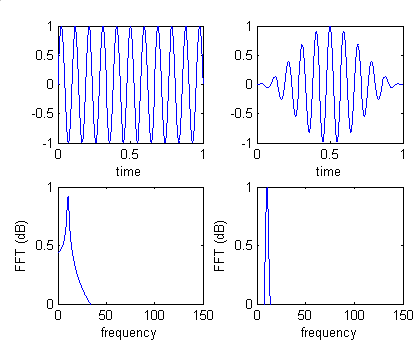
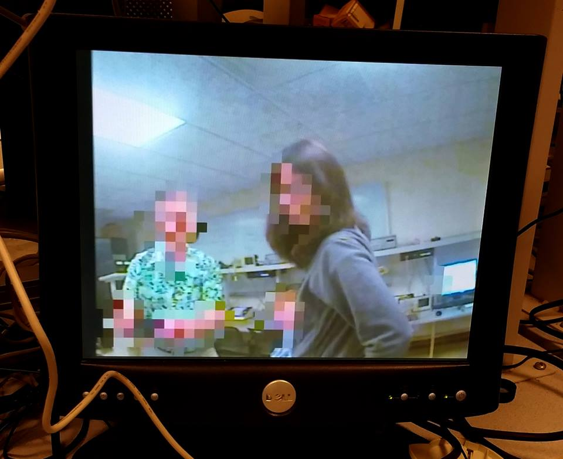

Introduction
Imagine you’re a criminal and you’ve just abducted a wealthy individual, but now you need to make a video to express your demands for ransom. Obviously you’d like to conceal your identity in said video but you’re a busy kidnapper and you don’t have time for video production and the post processing involved. This is where our anonymizer comes in. Using the technology we’ve developed, you can record a video that automatically blurs your face and disguises your voice as you record. No post processing necessary.
Actually, our project idea was born from a problem familiar to all graduate students: maximizing free food consumption. The department regularly leaves leftover seminar food in the PhD kitchen, but the students prefer not to constantly check the kitchen for free food. A mailing list called CS Vultures was created to alert all of the hungry graduate students to availability of free food. However, not everyone participated in the mailing list, so a more automated solution was desired. The idea of placing a live streaming camera in the kitchen was proposed, but it was quickly shot down by the administration due to university policy issues and privacy concerns.
Our project solves the problem of privacy concern with live-streaming by automatically detecting the faces on the screen and blurring them out in real time. The automated nature and speed are what set our approach apart from the standard workflow of post-processing videos to blur out contents.
High level design:
At a high level, our video pixelating algorithm is to flag portions of the screen that are skin, and then overlay low-resolution pixels to cover those areas. The resolution we chose for the blur pixels is 40x30, and each blur pixel is 16x16 full resolution pixels. For each full resolution pixel in a 16x16 block, we check whether it is skin and if so, add to an accumulator representing that blur pixel. If the blur pixel accumulator is above a configurable threshold, we overlay the average color for that block in the output video stream.
The skin detection algorithm is very simple and is based on Ooi[1]. We say a pixel is skin if 100 < R - G < 500, where R and G are the red and green channels from a 10-bit RGB pixel representation. Since the algorithm is based on the difference between R and G and not their absolute values, it does a pretty good job of detecting skin of various shades.
[1] Ooi, M. P. "Hardware implementation for face detection on Xilinx Virtex-II FPGA using the reversible component transformation colour space." Electronic Design, Test and Applications, 2006. DELTA 2006. Third IEEE International Workshop on. IEEE, 2006.
The overall goal for audio processing is to be able to disguise the identity of the speaker by distorting his/her pitch while retaining its short-time spectral characteristics and thus preserving the clarity of the speech content of the audio samples. The concept for Overlapping FFT Hanning Window and Phase Vocoder algorithm are crucial to solving our problem and they are introduced in more detail in the following sub-sections.
Phase Vocoder algorithm
For our purpose, we utilized the Phase Vocoder algorithm. As shown in the flowchart above, our process can be described in the following steps. We first store input audio samples frame by frame with ¾ overlapping at a frame size of 256 samples per frame. Every frame is processed with a Hanning Window function and then fed through an FFT(Fast Fourier Transform) which outputs X_n, forming stream X. Overlapping windowing is a common approach for frequency domain analysis like our application, and this is discussed in more detail in the sub-section below. We resample stream X at intervals of length r, and in order to do so we need to interpolate between the existing data points in X. Over time, this results in a series of n/r number of new frames. We stream interpolated frames through the iFFT(inverse FFT) and merge the overlapping frames to produce an audio stream Y. Finally we resample Y on the time domain at 1/r original sample rate. We now have completed processing the audio live stream. The output has changed in pitch but not in spectral characteristics so we can no longer identify the source of the voice but the speech content is still smooth and recognizable.
Overlapping FFT Hanning Window
Hanning Window is applied to each frame because this effectively reduce FFT frequency leakage for non-periodic frame snapshots. The contrast is shown the graph.

Now that the window attenuated the data on both ends of the frame, we need to take overlapping frames from the samples so that data on the two ends of the frames are not lost. The results are simply merged back together by summation.
Video Hardware Design
The entire project is implemented entirely in hardware, there is no CPU and no software. The trickiest part of this project was the audio, mostly because of the need to figure out the Altera FFT module, and debugging the timing of the pipeline as well as fixed point overflow issues. Video Hardware
Our video is streamed to the FPGA from an NTSC camera, where the frame buffer is stored in SDRAM in YCbCr format. Our algorithm and the VGA controller work in 10-bit RGB color format so we first convert to RGB. The RGB video data are then sent to classification and averaging modules to get a 40x30 buffer of binary values identifying whether each downsampled pixel is skin or not. We take the switches as input to the pixel classification module in order to tune the threshold value. The threshold is a 16-bit number which can be entered by encoding the binary number on with the lower 16 switches.
We also output the RGB video to a separate averaging module to get the average pixel color for a downsampled pixel. Finally, we multiplex the data coming from the camera with the data from the downsampled pixels. If there is a 1 in the 40x30 skin classification buffer corresponding to a given pixel, we output the average color from the downsampled buffer, otherwise we output the full resolution pixel.
We also output the blurred pixel if any of the surrounding pixels were flagged as skin, which helps to correct for gaps in the skin classification due to shadows around the eyes, or glasses.

Audio Hardware Design
One challenge we face is the fact that we wish to accomplish the processes in real time. We want to feed the processed audio samples to the speaker without any perceptible delay. We can only accomplish this because our audio processing pipeline is running about 1000 times faster than the audio sample rate and we can process a sample through our pipeline in less 1000 cycles.
Some of our major design decisions that address the performance concerns include fixed point arithmetics, utilizing quad processing for both the FFT and iFFT calculation modules, and pipelining the stages of the audio processing. For every frame of n audio samples with window size w, we have to process on the order of wn data points within ~41000n cycles. With the techniques mentioned above, we are able to do exactly that.

Fixed point arithmetic
Our design uses a system of custom fixed point arithmetic modules. Depending on the nature of each data point, the fixed-point schemes are different. This is to maximize the amount of numeric information we can store with limited width of data bus. Another motivation for this design decision is that our application requires a lot of multiplication; we would have quickly ran out of hardware resources and consume more cycles than we can afford if we were to go with bigger data length for a uniform fixed point system.
Pipelined arithmetic
We configured both FFT module and iFFT modules to quad output mode with four FFTs running in parallel, and we built custom arithmetic modules so that the rest of the calculations could be pipelined as well. This design effectively utilized the parallel computation power of the FPGA board. As a result, the data flows smoothly through modules without stalled cycles.
Trig Arithmetic
There are two major design decisions. The fixed point representations for angles and implementation of trigonometric lookup tables. The angles are represented as nine bit signed fixed point fraction of pi. For example, instead of storing 1.57 (half of pi) we would store ½. We also implemented lookup tables for both sin, cos and arccos operations. Our angle representation makes rounding easy to do.
Results

The video processing is fast enough so that no artifacts are visible on the screen. The skin detection updating is also fast enough that we are not able to move our faces fast enough to escape the blur effect. Once the skin detection threshold is properly tuned for the lighting conditions, it is very accurate.
The audio processing is pipelined so that we can run both the inverse FFT for one stage and the FFT for the next stage simultaneously. The FFT and inverse FFT modules are each implemented as four parallel quad-output FFTs. The FFT runs in approximately 500 cycles at 50MHZ, and our audio sample rate is 48KHZ. Ultimately, the ability to do so much of the computation in parallel on the FPGA makes it possible to run the entire audio pipeline in one audio sample period.
Conclusions
The video pixelator design works very well, and exceeded our expectations. Once tuned properly for lighting conditions, the blur effect is surprisingly accurate and robust.
While it is fast enough, our audio processing pipeline didn’t quite live up to our expectations based on our matlab model of the phase vocoder. We were able to get a Donald Duck-like effect for the voice, but there are some noticeable artifacts in the output. Our plan is to make the phase vocoder adjustable so that we can raise or lower the pitch of the input voice and fix the artifacts.
Intellectual Property
We based our initial design on a previous year project, which was in turn based on the Altera TV example and Bruce Land’s VGA controller and averaging module. We used the FFT, PLL and SDRAM controller from Altera’s megafunction collection.